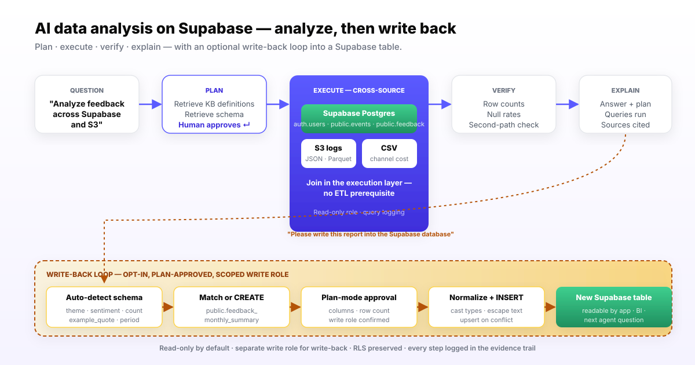

Supabase Data Analysis with AI: From Cross-Source Question to Result Written Back to Supabase
A working walkthrough of AI data analysis on Supabase — cross-source joins with S3 and CSV, knowledge-base grounded plans, and writing the verified result back into a Supabase table.
AuthorInfiniSynapse Research, product and data architecture team
Published2026-06-15 · Last verified 2026-06-15 · Next review 2026-09-15
Disclosure: This page is published by InfiniSynapse, an enterprise AI data analyst that connects to Supabase as one of several data sources. The worked examples below are documented InfiniSynapse demonstrations. We mark the honest limits — most importantly, the write-back step requires non-read-only credentials and human plan approval.
TL;DR
AI data analysis on Supabase runs a four-stage loop — plan, execute, verify, explain — on top of your project's Postgres, with the agent retrieving business context before SQL.
The cross-source angle is the unlock: Supabase + S3 + CSV in one question, no ETL prerequisite.
The unusual capability is write-back. An analysis result becomes a Supabase table the agent creates, normalizes, and inserts into — with your plan approval. See the AI database query pillar for the underlying pattern.
Direct answer: what does AI data analysis on Supabase actually do?
Supabase data analysis with AI uses an agent that connects to your Supabase Postgres, retrieves business context from a bound knowledge base, plans the analysis, runs SQL across Supabase and any other connected sources, verifies the result, and either delivers the answer or writes it back to a Supabase table when you approve.
What AI data analysis on Supabase looks like
You connect your Supabase project once — host, port, database, user, password from the project settings — with a role scoped to what the agent should see. From that point on, you ask questions in plain English instead of writing SQL.
The agent runs a four-stage loop borrowed from the agent research literature, especially the ReAct pattern and Anthropic's Building Effective Agents guidance:
Plan. The agent retrieves business context and Supabase schema, then drafts a query plan you can review and edit before anything runs.
Execute. Once approved, the agent runs SQL against your Supabase tables plus any other sources in the same request — S3, CSVs, other Postgres or warehouses.
Verify. The agent sanity-checks results — row counts, null rates, second-path metric validation — and flags low-confidence outputs.
Explain. You get an answer plus the plan, the queries that ran, the sources pulled, and any caveats.

Worked example 1: cross-source channel attribution on Supabase
Imagine a SaaS startup running on Supabase. Auth and app data live in Supabase (auth.users, public.profiles, public.events). Marketing analytics logs land in S3 as daily JSON. The marketing channel cost CSV lives in a Google Drive folder synced to disk.
The product manager asks:
"Which marketing channels are bringing users who actually activate within seven days, and what is the cost per activated user by channel for the last 30 days?"
Stage 1: Plan
The agent retrieves from the knowledge base that "activate" means at least three public.events with event_type IN ('project_created','member_invited','data_connected') in the user's first seven days. It retrieves Supabase schema for auth.users and public.events, lists the S3 log prefix, and notes the cost CSV columns. The plan: join Supabase users to S3 first-touch logs on email, classify channel from the log, count activations per user from public.events, join channel costs from the CSV, return a table.
Stage 2: Execute
You approve the plan. The agent runs three queries: a Supabase SQL pull of new users and their activation events, an S3 read of the marketing log, and a read of the channel cost CSV. The cross-source join happens in the execution layer; you do not write the join yourself.
Stage 3: Verify
The agent checks that the user count matches a sanity query against auth.users for the date range, confirms no channel is missing a cost row, and flags that 4.2% of users could not be matched to a first-touch log — it surfaces this rather than silently dropping them.
Stage 4: Explain
You get a table: channel, new users, activated users, activation rate, channel cost, cost per activated user. Underneath, the plan, the three queries, and the source list. The PM forwards the row that matters to finance with the evidence trail attached.
Worked example 2: analyze user feedback, then write the report back to Supabase
This is the documented InfiniSynapse demonstration that motivates this page — and the capability you will not find in most AI SQL tools.
Setup: feedback data lives in public.feedback in your Supabase project, and additional support tickets are exported daily to S3 as Parquet. You want a recurring monthly analysis whose output is itself a Supabase table other parts of your application can read.
Step 1: Ask for the analysis
"Please analyze user feedback from these sources and produce a monthly summary report — top themes, sentiment, and example quotes."
The agent retrieves Supabase schema, lists the S3 prefix, plans the analysis, asks for plan approval, and runs. It returns a structured report: themes, sentiment scores, counts, example quotes. So far this is normal AI data analysis.
Step 2: Ask the agent to write it back
"Please write this analysis report into the Supabase database."
This is where the workflow diverges from read-only AI SQL tools. The agent:
Auto-detects the result schema — columns for theme, sentiment_score, mention_count, example_quote, period_start, period_end.
Checks for a target table in Supabase. If public.feedback_monthly_summary exists with a matching schema, the agent prepares an upsert. If it does not exist, the agent proposes a CREATE TABLE statement and the column types it chose.
Asks you to approve the write. Read-only credentials are not enough at this step; the agent needs the write role you granted explicitly for write-back, and the plan you see lists every column and the row count it intends to insert.
Normalizes the data — converts sentiment from the model's labels to numeric scores, casts dates to timestamptz, escapes quote text — and runs the INSERT or upsert.
Confirms the write with a count query against the target table, surfaced as part of the explain step.
The result: a Supabase table populated by an AI agent from a cross-source analysis. Your dashboard tool, your app, or your next agent question can read it like any other table.
Why this is rare
Most AI SQL features stop at the read. Write operations introduce schema risk, idempotency risk, and security risk that vendors avoid. InfiniSynapse handles them by combining schema auto-detection, plan review, scoped write roles, and a verification step. This is the data-migration-between-data-sources angle — data flows between formats and stores without manual export, import, or transform scripts.
Knowledge base bound to Supabase — definitions on rails
The single biggest source of AI SQL errors is not bad query generation. It is the agent guessing what your metric means. For a Supabase project, the bound knowledge base fixes this.
Each Supabase connection in InfiniSynapse pairs with a curated knowledge base of business definitions, dictionary entries, and analysis playbooks. Examples for the SaaS scenario:
"Activation" is at least three public.events with specific event_type values in the first seven days.
auth.users.email is the join key against external first-touch logs.
"Free tier" is a profile with plan_id IS NULL or plan_id = 'free'.
The marketing channel taxonomy lists 11 canonical values; anything else is "other."
The agent retrieves from this knowledge base as a tool call before running SQL. The database tells the agent what happened. The knowledge base tells the agent what those facts mean. Retrieval-augmented generation is the underlying primitive — applied to business semantics, not general knowledge.
Without KB binding
With KB binding
Agent guesses "active user" = a recent login
Agent uses your defined event-based activation criterion
Channel names vary between queries
Agent normalizes to your 11 canonical channels
"Last 30 days" silently rolls timezone differently each run
Agent applies your defined timezone and boundary rule
RLS policies surprise the agent
KB notes which schemas have RLS and what role the agent is using
Plan mode on Supabase — why review matters more for writes
InfiniSynapse surfaces every analysis as a plan you can read and edit before execution. For read-only Supabase queries the plan is a safety check. For write-back queries it is the safety check.
What you see in plan mode for the write-back step:
The target schema and table name — created or matched
The column types the agent picked, with reasoning
The INSERT or upsert pattern, including conflict targets
The expected row count
The role the agent will use — the one with write permissions on this specific schema
Approval is binary. Reject and the agent revises. Approve and it writes. Either way the plan, the queries, the row count, and the result land in the audit trail.
Cross-source patterns that just work
The combinations Supabase teams ask about most often.
Pattern
Sources
What the agent does
Where it shines
Supabase + S3
App DB + object storage logs
Joins event logs in S3 to user identity in Supabase
Product analytics that outgrew Studio reports
Supabase + external Postgres
App DB + ops or finance DB
Cross-database joins on shared business keys
Customer lifecycle analysis across systems
Supabase + CSV
App DB + uploaded sales or marketing file
Joins the uploaded file against Supabase tables in one question
Ad-hoc business questions that need an offline data source
Supabase + Snowflake
App DB + warehouse
Pulls warehouse aggregates and joins to app data
Hybrid product + data team setups
Supabase + Supabase
Two Supabase projects
Multi-tenant or staging-vs-prod comparisons
Investigating differences between environments
Supabase-specific gotchas the agent has to handle
Supabase is Postgres with extras. The extras matter.
Row-Level Security
RLS policies apply to whichever role the agent connects with. If the agent role has RLS enabled, the agent sees only what that role can see — by design. Set this up before running the agent on data with user-level access controls.
Auth schema vs public schema
The auth.users table is owned by Supabase and has its own access rules. The agent should usually join to your public.profiles rather than read auth.users directly, except when computing user-cohort metrics where the auth signup time matters.
JSONB columns
Supabase apps lean heavily on JSONB. The agent has to understand which JSON keys are stable and which are not. The knowledge base is where you tell it.
Realtime channels
Supabase realtime is a websocket subscription pattern, not a queryable table. Agent analysis ignores realtime channels and reads the underlying tables directly. Surface this so analysts do not expect "live stream" results.
Encrypted columns
If you use pgcrypto-encrypted columns, the agent's role needs decrypt access for those columns to be analyzable. Otherwise the agent sees opaque bytea and will flag the column as unreadable.
Honest limits
Where the AI workflow shines
Open-ended Supabase questions with no pre-built dashboard
Cross-source joins against S3, CSV, or external databases
Recurring analyses that should land back in a Supabase table
Investigations that need an evidence trail for review
Teams with at least the top ten metric definitions written down
Where it is the wrong tool
Fixed daily dashboards — a BI tool is cheaper and faster
Sub-second app queries that the application itself should issue
Teams with no agreed metric definitions — the agent will faithfully automate the ambiguity
Schema design and migrations — that is Supabase Studio's job
Write-back at scale without human review — do not skip the plan
92.96%
Human engineer execution accuracy on the BIRD text-to-SQL benchmark — the bar models still trail, which is why AI agents add context, planning, and verification rather than relying on one-shot SQL. Source: BIRD
4
Stages in every AI Supabase analysis: plan, execute, verify, explain — the loop derived from the ReAct agent pattern. Source: arXiv 2210.03629
2
Roles you typically grant on Supabase — one read-only role for analysis, one scoped write role for explicit write-back. The split keeps the audit trail clean. Source: NIST AI RMF
Adoption: a one-week Supabase pilot
Connect Supabase read-only with a role limited to the schemas you want analyzed. Confirm the agent retrieves schema without you describing tables.
Seed the knowledge base with your top ten metric definitions and the canonical values for any business taxonomy. Confirm the agent cites them back in plan mode.
Run three questions you know the answer to. One single-source, one cross-source, one open-ended "why." Score the plans, the answers, and the evidence trail.
Add a second source. An S3 bucket or a CSV. Re-run the cross-source question end to end and watch the join happen at the execution layer.
Try one write-back in a staging Supabase project. Approve the plan, watch the agent create or match the target table, and verify the row count. Only after this works do you wire write-back to production.
Try AI data analysis on your own Supabase project
Connect Supabase, ask one cross-source question, and review the plan, queries, result, and evidence trail. If you want to see the write-back loop, ask the agent to materialize the result as a new Supabase table — review the plan first.
An AI agent connects to your Supabase Postgres, retrieves business context from a bound knowledge base and schema from connected tables, drafts a plan you review, runs SQL across Supabase and any other sources, verifies the result, and delivers an answer with the queries it ran. The shape is plan, execute, verify, explain — not one-shot SQL generation.
Can AI write back to Supabase tables?
Yes, when you grant non-read-only credentials and approve the plan. InfiniSynapse demonstrates this on Supabase: after producing an analysis report, the agent can write the result back as a Supabase table, auto-detecting the schema, creating or matching the target table, normalizing the data, and confirming the write. Most AI SQL tools are read-only by design.
Is it safe to give an AI agent access to Supabase?
With guardrails, yes. The pattern is a dedicated read-only role for analysis, a separate write role for the write-back step, Row-Level Security policies intact, plan review before any execution, and query logging on every run. The NIST AI Risk Management Framework gives your security team a shared structure for approving this class of tool.
Can AI join Supabase data with S3 files?
Yes. InfiniSynapse documents Supabase and S3 as two of several connectable sources, with cross-source analysis handled inside one question. The agent reads schema from Supabase tables, lists or scans S3 objects, plans the join, runs both reads, and combines the results. There is no ETL prerequisite for this shape of analysis.
Does AI respect Supabase Row-Level Security?
It depends on the role you give it. If the agent connects with a role that has RLS policies, every query runs under those policies — the agent cannot bypass them. If you grant a service role for broader analysis, RLS is bypassed by design; reserve that pattern for analytics-only schemas. Match the connection role to the data sensitivity.
How accurate is AI on Supabase queries?
Accuracy depends more on context than on raw SQL generation. On the BIRD text-to-SQL benchmark, human engineers reach 92.96% execution accuracy and models still trail that bar. AI agents close the gap by retrieving metric definitions from a bound knowledge base, planning before executing, and verifying results — so the workflow, not the model, drives correctness.
Will an AI agent break my Supabase project?
A correctly configured agent will not. Use a read-only role by default. Reserve write permissions for explicit write-back steps with plan review. Watch query logs for unexpected patterns. Test on a staging Supabase project first. The risks are the same as giving any analyst read access — they are well understood and well controlled.
Methodology and review notes
Last updated: 2026-06-15 · Next scheduled review: 2026-09-15
The worked examples on this page are based on documented InfiniSynapse demonstrations using Supabase and S3 as connectable data sources. Stage names follow the ReAct pattern from the academic agent literature. Accuracy claims trace to the BIRD text-to-SQL benchmark; governance guidance traces to the NIST AI Risk Management Framework and the EU AI Act.
Conflict of interest: InfiniSynapse publishes this guide and is the vendor demonstrated. To reduce bias, the page calls out cases where AI agents are the wrong tool, separates the write-back step as a higher-risk operation that needs explicit human review, and lists Supabase-specific gotchas the agent must handle rather than glossing over them.
Update cadence: Reviewed every 90 days for terminology, source links, and Supabase feature changes.